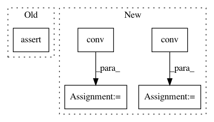

bef529dbb4eb10b1ec1cad14a6f630dd472dd73b,test/nn/conv/test_tag_conv.py,,test_tag_conv,#,5
Before Change
conv.eval()
jitconv.eval()
jittedconv.eval()
assert (torch.abs(conv(x, edge_index) -
jitconv(x, edge_index)) < 1e-6).all().item()
assert (torch.abs(conv(x, edge_index) -
jittedconv(x, edge_index)) < 1e-6).all().item()
assert conv(x, edge_index, edge_weight).size() == (num_nodes, out_channels)
After Change
conv = TAGConv(in_channels, out_channels)
assert conv.__repr__() == "TAGConv(16, 32, K=3)"
out1 = conv(x, edge_index)
assert out1.size() == (num_nodes, out_channels)
out2 = conv(x, edge_index, edge_weight)
assert out2.size() == (num_nodes, out_channels)
jit_conv = conv.jittable(x=x, edge_index=edge_index)
jit_conv = torch.jit.script(jit_conv)
In pattern: SUPERPATTERN
Frequency: 3
Non-data size: 5
Instances
Project Name: rusty1s/pytorch_geometric
Commit Name: bef529dbb4eb10b1ec1cad14a6f630dd472dd73b
Time: 2020-06-08
Author: matthias.fey@tu-dortmund.de
File Name: test/nn/conv/test_tag_conv.py
Class Name:
Method Name: test_tag_conv
Project Name: rusty1s/pytorch_geometric
Commit Name: 3136b84e522b4a2dfaf71810ebbecf03bf24066c
Time: 2020-06-08
Author: matthias.fey@tu-dortmund.de
File Name: test/nn/conv/test_graph_conv.py
Class Name:
Method Name: test_graph_conv
Project Name: rusty1s/pytorch_geometric
Commit Name: bef529dbb4eb10b1ec1cad14a6f630dd472dd73b
Time: 2020-06-08
Author: matthias.fey@tu-dortmund.de
File Name: test/nn/conv/test_tag_conv.py
Class Name:
Method Name: test_tag_conv
Project Name: rusty1s/pytorch_geometric
Commit Name: 35215bd23d3d4717a8b1da0951c7077b66458839
Time: 2020-06-08
Author: matthias.fey@tu-dortmund.de
File Name: test/nn/conv/test_gated_graph_conv.py
Class Name:
Method Name: test_gated_graph_conv